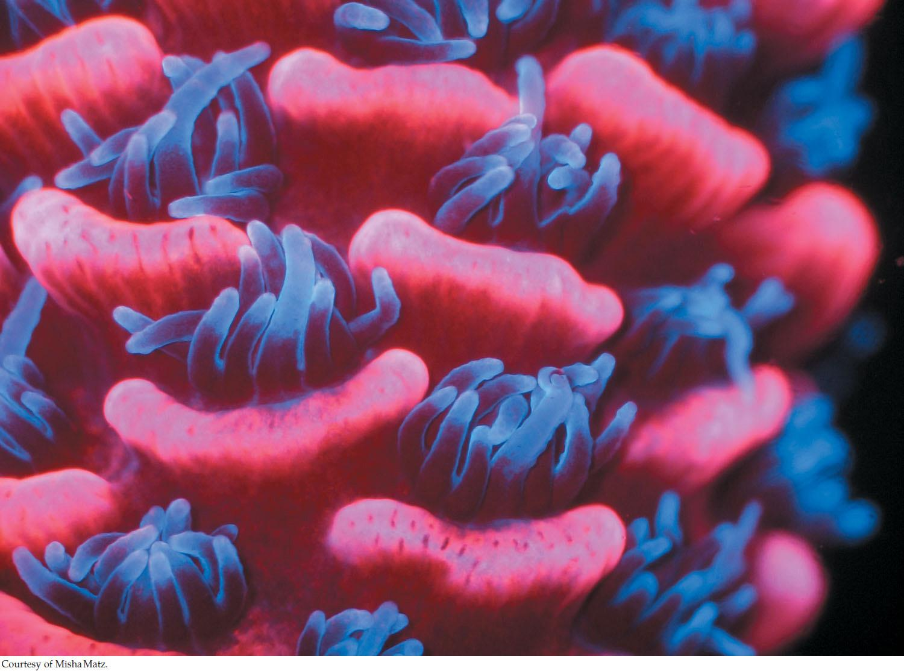

| 16 | Reconstructing and Using Phylogenies |
|

The reef-building coral Acropora millepora shows cyan and red fluorescence. This photograph was taken under a fluorescent microscope that affects the colors we see. The colors are perceived differently by marine animals in their natural environment.
|
Green fluorescent protein (GFP) was discovered in 1962 when Osamu Shimomura, an organic chemist and marine biologist, led a team that was able to purify the protein from the tissues of the bioluminescent jellyfish Aequorea victoria. Some 30 years after GFP’s initial discovery, Martin Chalfie had the idea (and the technology) to link the gene for GFP to other protein-coding genes, so that the expression of specific genes of interest could be visualized in glowing green within cells and tissues of living organisms (see Figure 13.6). This work was extended by Roger Tsien, who changed some of the amino acids within GFP to create proteins of several distinct colors. Different colored proteins meant that the expression of a number of different proteins could be visualized and studied in the same organism at the same time. These three scientists were awarded the 2008 Nobel Prize in Chemistry for the isolation and development of GFP for visualizing gene expression.
Tsien was able to produce different colored proteins, but he could not produce a red protein. This was frustrating; a red fluorescent protein would be particularly useful to biologists because red light penetrates tissues more easily than do other colors. Tsien’s work stimulated Mikhail Matz to look for new fluorescent proteins in corals (which are relatives of the jellyfishes). Among the different species he studied, Matz found coral proteins that fluoresced in various shades of green, cyan (blue-green)—and red.
How had fluorescent red pigments evolved among the corals, given that the necessary molecular changes had eluded Tsien? To answer this question, Matz sequenced the genes of the fluorescent proteins and used these sequences to reconstruct the evolutionary history of the amino acid changes that produced different colors in different species of corals.
Matz’s work showed that the ancestral fluorescent protein in corals was green, and that red fluorescent proteins evolved in a series of gradual steps. His analysis of evolutionary relationships allowed him to retrace these steps. Such an evolutionary history, as depicted in a tree of relationships among lineages, is called a phylogeny.
The evolution of many aspects of an organism’s biology can be studied using phylogenetic methods. This information is used in all fields of biology to understand the structure, function, and behavior of organisms.
How are phylogenetic methods used to resurrect protein sequences from extinct organisms?